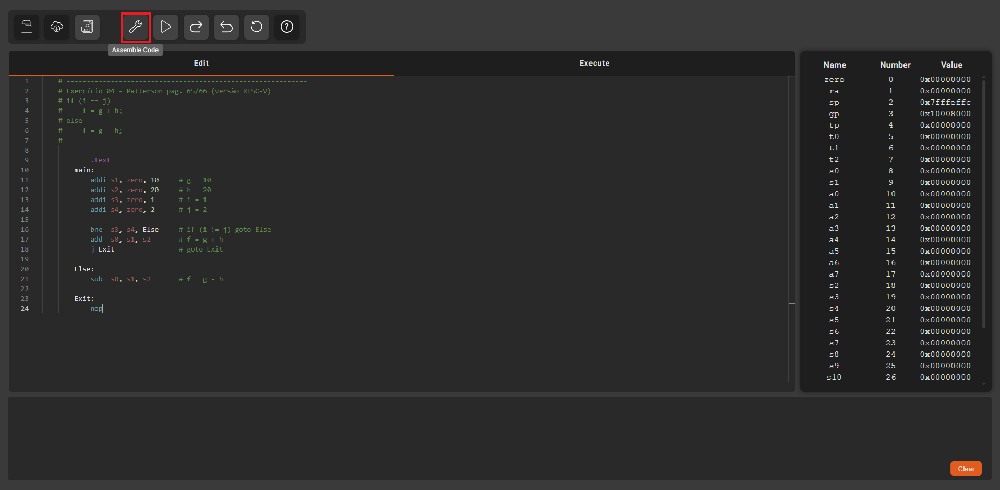
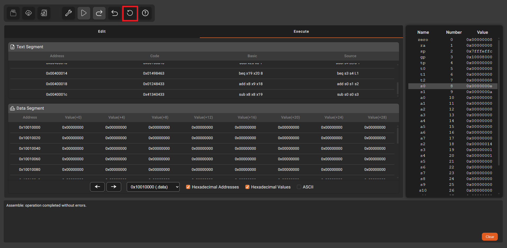

Consolidar o uso da instrução de desvio condicional em RISC-V
# ------------------------------------------------------------
# Exercício 04 - Patterson pag. 65/66 (versão RISC-V)
# if (i == j)
# f = g + h;
# else
# f = g - h;
# ------------------------------------------------------------
.text
main:
addi s1, zero, 10 # g = 10
addi s2, zero, 20 # h = 20
addi s3, zero, 1 # i = 1
addi s4, zero, 2 # j = 2
bne s3, s4, Else # if (i != j) goto Else
add s0, s1, s2 # f = g + h
j Exit # goto Exit
Else:
sub s0, s1, s2 # f = g - h
Exit:
nopClique no botão Assemble para montar o programa.
Observe que fazendo uso da instrução addi é possível atribuir valores aos registradores s1, s2, s3 e s4, conforme segue:
| Registrador | Número do Registrador | Valor |
|---|---|---|
| s1 | 9 | 10 |
| s2 | 18 | 20 |
| s3 | 19 | 1 |
| s4 | 20 | 2 |
Obs:
O endereço 1 não se refere ao registrador
s1, mas sim ao registrador ra.
O endereço do registrador s1 é 9 (0x9).
Ele pode ser referenciado digitando-se x9, bem como
s1.
Faça a execução passo-a-passo do programa e, a cada instrução, preencha a tabela abaixo cada vez que o valor de um registrador ou posição da memória de dados for modificado.
| Antes da execução da instrução | Depois da execução da instrução | |||||
|---|---|---|---|---|---|---|
| PC | Instrução | R8 | R9 | R18 | R19 | R20 |
| (s0) | (s1) | (s2) | (s3) | (s4) | ||
| 0x00400000 | addi s1, zero, 10 | 0x0000000A | ||||
Altere as instruções addi para atribuir os seguintes valores aos registradores s1, s2, s3, e s4 (note que agora s3 e s4 são iguais a 1).
| Registrador | Número do Registrador | Valor |
|---|---|---|
| s1 | 9 | 10 |
| s2 | 18 | 20 |
| s3 | 19 | 1 |
| s4 | 20 | 1 |
Recarregue o programa com a opção Reset.
Faça a execução passo-a-passo do programa e, a cada instrução, preencha a tabela abaixo cada vez que o valor de um registrador ou posição da memória de dados for modificado.
| Antes da execução da instrução | Depois da execução da instrução | |||||
|---|---|---|---|---|---|---|
| PC | Instrução | R8 | R9 | R18 | R19 | R20 |
| (s0) | (s1) | (s2) | (s3) | (s4) | ||
| 0x00400000 | addi s1, zero, 10 | 0x0000000A | ||||
Compare as duas tabelas e analise a diferença entre o fluxo de instruções executadas (veja a sequência de valores do PC) e o valor final de s0.
Se desejar reiniciar o programa, clique no botão Reset.